ตั้งค่าโฮมสเตย์และบ้านพัก รับการจอง ตรวจสลิป เช็คอิน จัดการแพลนและกระเป๋าเงิน ทีละขั้นตอน พร้อมภาพหน้าจอจริง
Peaksnature ให้โฮมสเตย์ของคุณมีหน้าเว็บจองตรงของตัวเองที่ peaksnature.com/ชื่อของคุณ แขกจองและจ่ายเงินเข้าบัญชีคุณโดยตรงผ่าน PromptPay ระบบหลังบ้าน (แดชบอร์ด) คือที่ที่คุณตั้งค่าหน้าเว็บ ดูการจอง และจัดการเงิน ใช้ได้ทั้งบนมือถือและคอมพิวเตอร์
นอกจากนี้ คุณบันทึกการจองที่มาจากช่องทางอื่น (Walk-in, Booking.com, Agoda, โทรศัพท์) ได้ด้วยปุ่ม จองด่วน เพื่อกันวันในปฏิทินไม่ให้แขกจองซ้ำ
บนคอมพิวเตอร์ (จอกว้างตั้งแต่ 1024 พิกเซล) เมนูอยู่ด้านซ้ายเสมอ กดลูกศรมุมบนเพื่อย่อเหลือแต่ไอคอน
บนมือถือและแท็บเล็ต กดปุ่ม ☰ เมนู มุมซ้ายบน เมนูจะเลื่อนออกมาจากด้านซ้าย กด × แตะนอกเมนู หรือเลือกหน้าเพื่อปิด
ด้านล่างเมนูแสดงอีเมลที่ใช้อยู่ บทบาท (เจ้าของ / ทีมงาน) และปุ่ม ออกจากระบบ ซึ่งออกจากระบบเฉพาะเครื่องนี้ เครื่องอื่นที่ล็อกอินไว้ยังใช้งานต่อได้
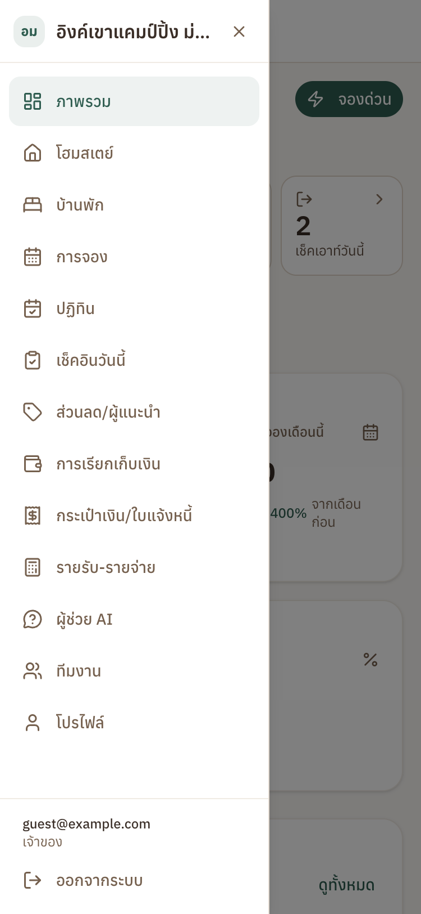
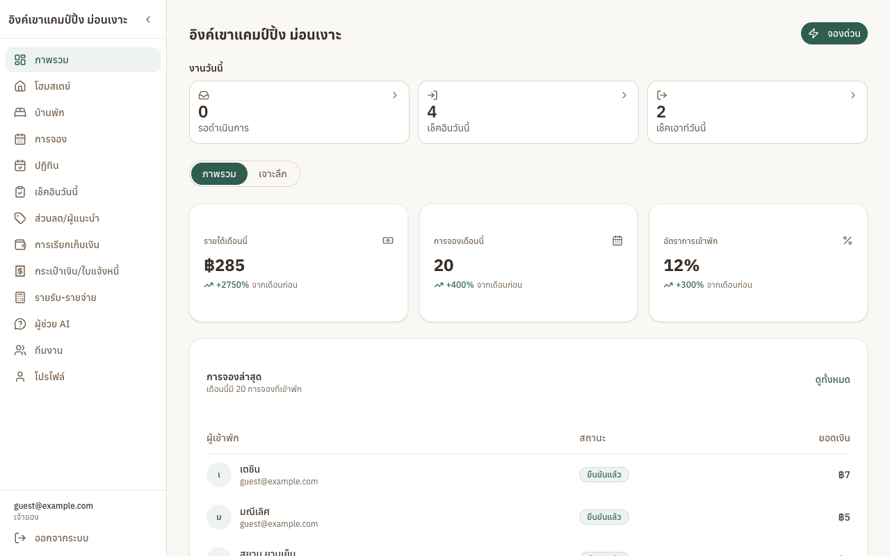
เจ้าของเพิ่มบัญชีทีมงานให้พนักงานได้ (บทที่ 15) ทีมงานเห็นเมนู 7 รายการแรกเท่านั้น
| เมนู | เจ้าของ | ทีมงาน |
|---|---|---|
| ภาพรวม · โฮมสเตย์ · บ้านพัก · การจอง · ปฏิทิน · เช็คอินวันนี้ · ส่วนลด/ผู้แนะนำ | ✓ | ✓ |
| การเรียกเก็บเงิน · กระเป๋าเงิน/ใบแจ้งหนี้ · รายรับ-รายจ่าย · ผู้ช่วย AI · ทีมงาน · โปรไฟล์ | ✓ | — |
ถ้าทีมงานเปิดลิงก์ของหน้าที่เป็นของเจ้าของเท่านั้น ระบบจะพากลับไปหน้าภาพรวม
ถ้ามีเรื่องที่ทำให้แขกจองออนไลน์ไม่ได้ จะมีแถบสีเตือนอยู่บนทุกหน้า:
| แถบ | สาเหตุ | ทำอย่างไร |
|---|---|---|
| แพลนฟรีของคุณหมดอายุแล้ว | แพลนฟรีหมดอายุ อยู่ในช่วงผ่อนผัน (การจองใหม่จะถูกระงับใน n วัน) | กด อัปเกรด เลือกแพลน (บทที่ 11) |
| การจองใหม่ถูกระงับ | มีใบแจ้งหนี้เกินกำหนด หรือแพลนฟรีหมดอายุเกินช่วงผ่อนผัน | กด ชำระเงิน หรือ อัปเกรด |
| การจองใหม่ถูกระงับ (กระเป๋าเงิน) | แพลนค่าคอมมิชชั่น: ยอดกระเป๋าเงินติดลบเกินกำหนด | กด เติมเงิน (บทที่ 12) |
| การจองออนไลน์ปิดชั่วคราว | (ทีมงานเห็น) บัญชีเจ้าของถูกระงับการจอง | แจ้งเจ้าของที่พัก |
ไปที่ peaksnature.com/register
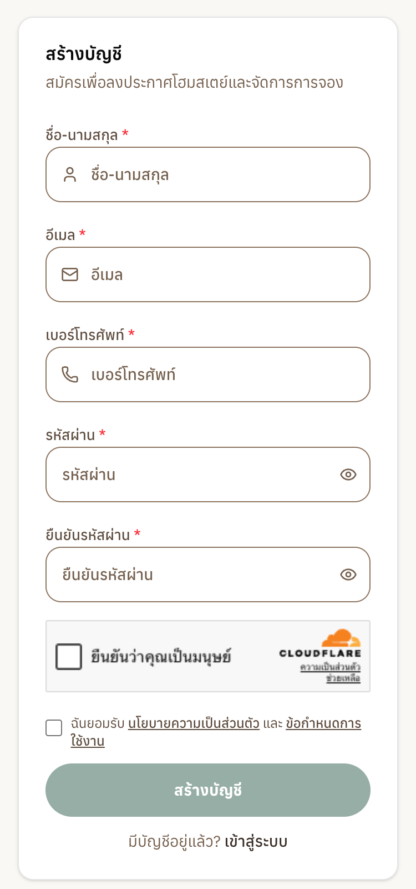
เจ้าของปิดขั้นตอนรหัสทางอีเมลได้ในโปรไฟล์ (บทที่ 16) บัญชีทีมงานต้องกรอกรหัสทุกครั้ง
| ข้อความ | ความหมาย |
|---|---|
| อีเมลหรือรหัสผ่านไม่ถูกต้อง | ตรวจตัวพิมพ์เล็ก–ใหญ่ หรือใช้ “ลืมรหัสผ่าน?” |
| ยังไม่ได้ยืนยันอีเมล | กดลิงก์ในอีเมลสมัครสมาชิกก่อน |
| รหัสหมดอายุ กรุณาขอรหัสใหม่ | เกิน 5 นาที กดส่งรหัสอีกครั้ง |
กด ลืมรหัสผ่าน? ในหน้าเข้าสู่ระบบ กรอกอีเมลแล้วกด ส่งลิงก์รีเซ็ตรหัสผ่าน เปิดลิงก์ในอีเมล ตั้งรหัสผ่านใหม่ (ห้ามซ้ำรหัสเดิม) แล้วกด อัปเดตรหัสผ่าน ถ้าลิงก์หมดอายุ ให้ขอลิงก์ใหม่
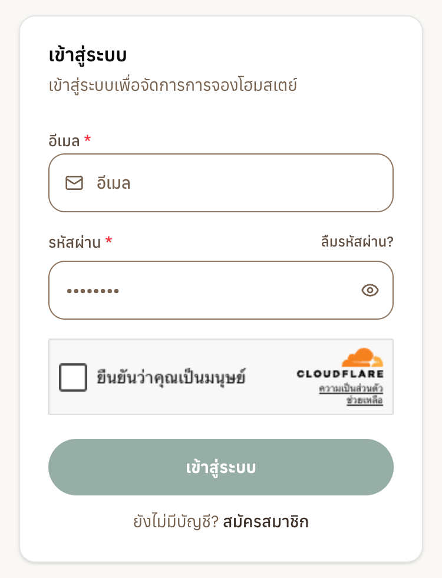
ครั้งแรกที่เข้าแดชบอร์ด จะมีหน้าต่าง “กรอกข้อมูลโปรไฟล์” ขอข้อมูลที่ยังขาด: เบอร์โทรศัพท์, หมายเลข PromptPay (บัญชีที่รับเงินจากแขก) และรหัส PIN ความปลอดภัย 4–6 หลัก (กรอก 2 ครั้ง) ต้องกรอกให้ครบแล้วกด บันทึกและดำเนินการต่อ จึงจะใช้งานต่อได้ จำ PIN ไว้ ใช้ปลดล็อกข้อมูลสำคัญในโปรไฟล์
ทำตามลำดับนี้ครั้งเดียว แล้วหน้าเว็บของคุณจะพร้อมรับแขก
| # | ทำอะไร | ที่ไหน |
|---|---|---|
| 1 | กรอกเบอร์โทร PromptPay และตั้ง PIN (หน้าต่างแรกที่เข้าระบบ) | บทที่ 2.4 |
| 2 | เลือกวิธีรับเงินที่แขกเห็น (QR PromptPay หรือโอนเข้าบัญชี) และช่องทางแจ้งเตือน (SMS หรือ LINE) | โปรไฟล์ · บทที่ 16 |
| 3 | ตั้งชื่อ ลิงก์ (URL Slug) ที่ตั้ง แผนที่ เวลาเช็คอิน–เอาท์ | โฮมสเตย์ · 5.1–5.3 |
| 4 | อัปโหลดโลโก้ รูปหลัก และรูปแกลเลอรี่ แล้วกดบันทึก | โฮมสเตย์ · 5.11 |
| 5 | ตั้งมัดจำ นโยบายยกเลิก และรูปแบบการจอง | โฮมสเตย์ · 5.9 |
| 6 | สร้างบ้านพักทุกหลัง พร้อมราคา จำนวนคน และรูป (รูปแรก = รูปปก) | บ้านพัก · บทที่ 6 |
| 7 | เลือกแพลนที่เหมาะกับคุณ | การเรียกเก็บเงิน · บทที่ 11 |
| 8 | เปิด peaksnature.com/ชื่อของคุณ บนมือถือ ลองเลือกวันและบ้านพักดูว่าราคาถูกต้อง (ไม่ต้องจ่ายเงินจริง) | หน้าเว็บของคุณ |
เมนู ภาพรวม · หน้าแรกหลังเข้าสู่ระบบ
| ช่อง | นับอะไร | กดแล้วไปที่ |
|---|---|---|
| รอดำเนินการ | การจองที่รอคุณตรวจสอบ (ทุกวันที่) ช่องนี้เป็นสีเหลืองเมื่อมีมากกว่า 0 | การจอง › แท็บรอดำเนินการ |
| เช็คอินวันนี้ | แขกที่เช็คอินวันนี้ | เช็คอินวันนี้ |
| เช็คเอาท์วันนี้ | แขกที่ออกวันนี้ | รายชื่อแขกออก ในหน้าเช็คอินวันนี้ |
ปุ่ม จองด่วน มุมขวาบน ใช้บันทึกการจองจากช่องทางอื่น (ดู 7.7) จะแสดงเมื่อมีบ้านพักที่เปิดใช้งานอย่างน้อย 1 หลัง
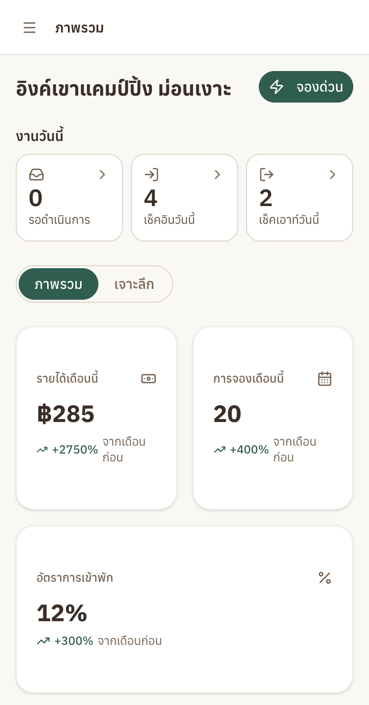
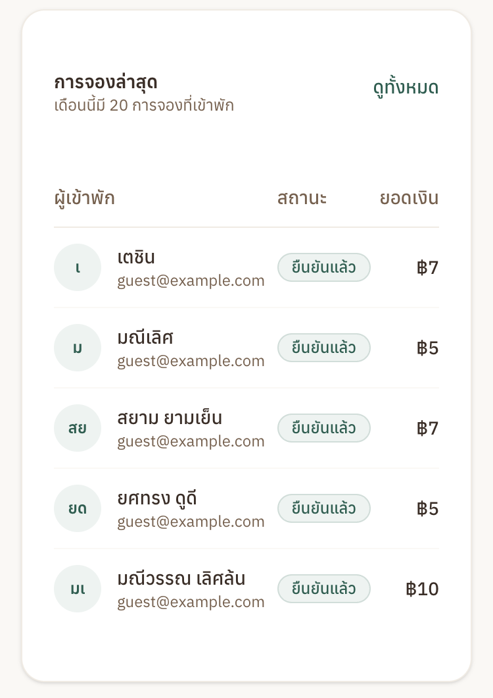
ดูว่ามีคนเข้ามาดูหน้าเว็บกี่คน และหลุดไปตรงขั้นไหน เลือกช่วง 7 / 30 / 90 วัน
ตัวเลขชุดนี้อัปเดตทุก 1 นาที
ADR (รายได้เฉลี่ยต่อคืนที่ขายได้), RevPAR (รายได้ต่อหลังต่อคืน รวมคืนที่ว่าง), อัตราการยกเลิก, สัดส่วนการจองตรง และกราฟแหล่งที่มาของการจองและจังหวัดของผู้เข้าพัก
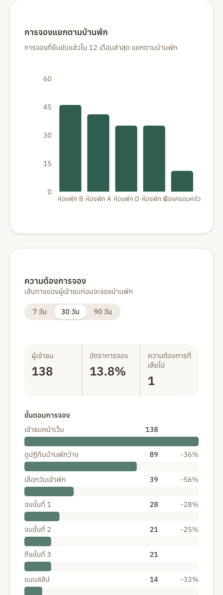
เมนู โฮมสเตย์ · หัวข้อหน้า “แก้ไขโฮมสเตย์” (บัญชีใหม่จะเห็น “สร้างโฮมสเตย์”)
ทุกอย่างในหน้านี้คือสิ่งที่แขกเห็นบนหน้าเว็บของคุณ (peaksnature.com/ชื่อของคุณ) ตั้งแต่ชื่อ รูป แผนที่ กฎ ไปจนถึงเงื่อนไขมัดจำและการยกเลิก หน้านี้ยาว จึงมีแถบ ไปยังหัวข้อ ให้กดกระโดดไปยังหัวข้อที่ต้องการ
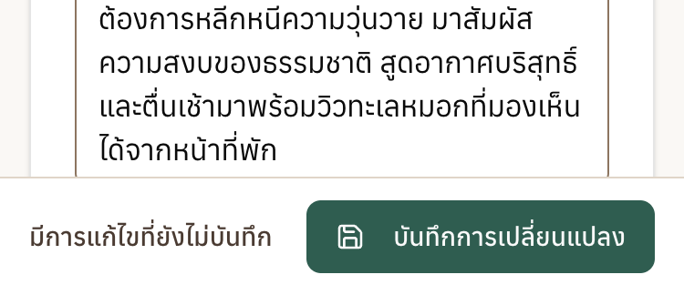
| ช่อง | ใช้ทำอะไร |
|---|---|
| ชื่อโฮมสเตย์ * | ชื่อที่แสดงตัวใหญ่บนหน้าเว็บ ต้องไม่ซ้ำกับที่พักอื่นในระบบ |
| URL Slug * | ส่วนท้ายของลิงก์หน้าเว็บ เช่น peaksnature.com/ing-khoa-camping ใช้ได้เฉพาะ a–z, 0–9 และขีด (-) ต้องไม่ซ้ำกับใคร |
| สโลแกน | ข้อความสั้นใต้ชื่อบนภาพหน้าแรก |
| รายละเอียด | เรื่องราวของที่พัก ทำตัวหนา ตัวเอียง และรายการได้ |
ช่องที่มี * ต้องกรอก ถ้าเว้นว่างจะบันทึกไม่ได้และขึ้นข้อความ “กรุณากรอกชื่อ slug และที่ตั้ง”
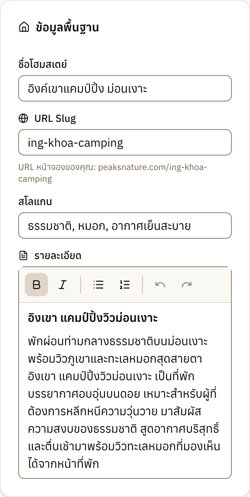
ค่าเริ่มต้นคือเช็คอิน 14:00 และเช็คเอาท์ 11:00 แขกจะเห็นเวลานี้ในหน้าเว็บและในอีเมลยืนยัน
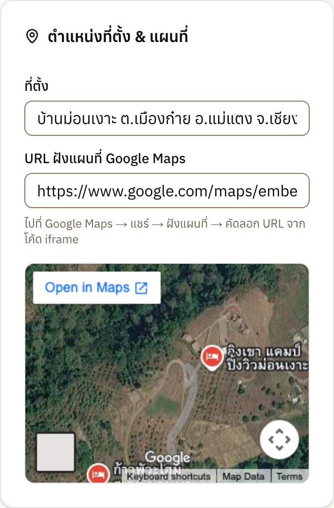
ทั้งสองหัวข้อใช้วิธีเดียวกัน
ช่องข้อความยาว จัดรูปแบบได้ เหมาะกับการเดินทาง จุดนัดรับ สัญญาณโทรศัพท์ ข้อห้าม และเงื่อนไขการคืนเงิน
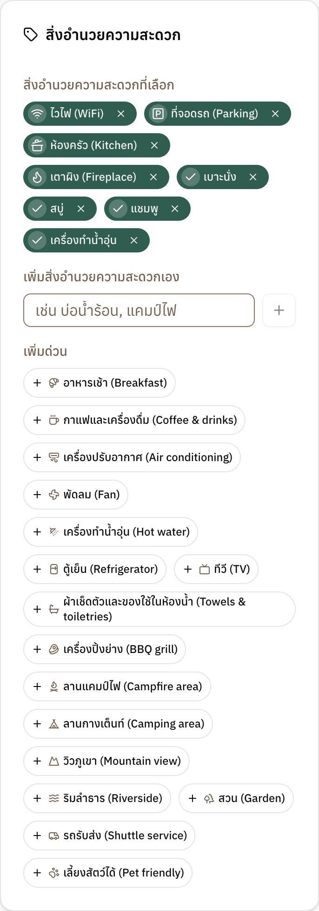
คำถามเหล่านี้แสดงบนหน้าเว็บ และผู้ช่วย AI (บทที่ 14) ใช้เป็นข้อมูลตอบแขกด้วย ยิ่งเขียนครบ แขกยิ่งถามซ้ำน้อยลง
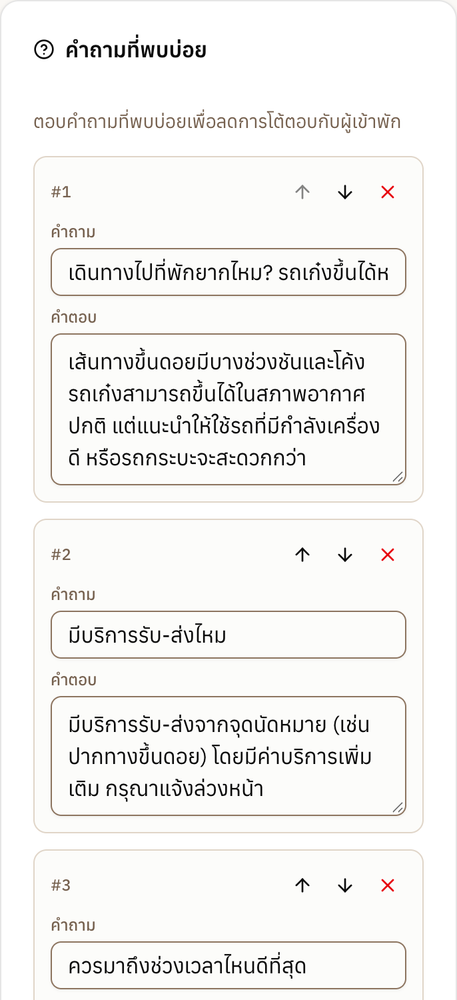
หัวข้อนี้กำหนดเงินที่แขกต้องจ่ายตอนจอง ระยะยกเลิก และรูปแบบการจอง ทีมงาน (บทที่ 15) แก้ไขหัวข้อนี้ได้ด้วย
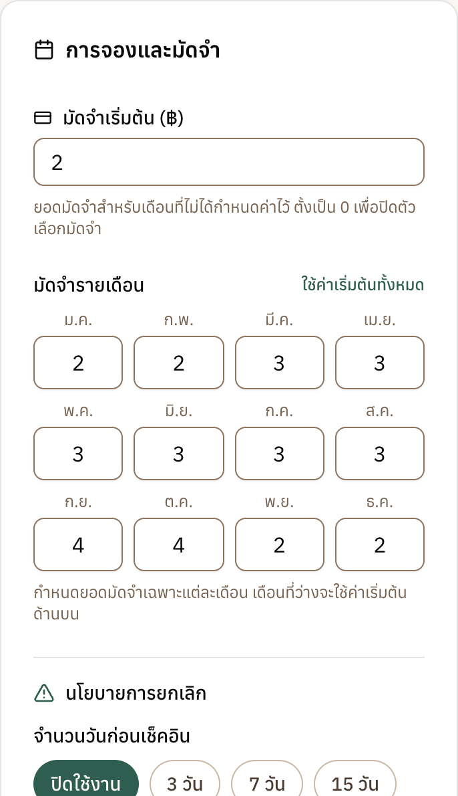
เลือก ปิดใช้งาน / 3 / 7 / 15 / 30 วัน (ค่าเริ่มต้น: ปิดใช้งาน) แขกจะกดยกเลิกการจองที่ยืนยันแล้วได้เอง เฉพาะเมื่อเหลือเวลาก่อนเช็คอินอย่างน้อยเท่าจำนวนวันที่เลือก ถ้าปิดใช้งาน แขกยกเลิกเองไม่ได้ ต้องติดต่อคุณ
“เก็บข้อมูลไว้ให้กลับมาชำระเงินได้” ถ้าแขกกรอกข้อมูลแล้วปิดหน้าไปก่อนจ่าย ระบบจะเก็บข้อมูลไว้ให้แขกกลับมาจ่ายต่อได้ตามเวลาที่เลือก (ปิดใช้งาน, 1, 3, 6 ชั่วโมง, 1, 3, 7 วัน · ค่าเริ่มต้น 1 ชั่วโมง) เลือก ปิดใช้งาน เพื่อไม่เก็บข้อมูลใดๆ
| แบบ | แขกทำอะไร | คุณทำอะไร |
|---|---|---|
| จองปกติ | โอนเงินแล้วอัปโหลดสลิปในหน้าจอง | ไม่ต้องทำอะไร ระบบตรวจสลิปอัตโนมัติและยืนยันการจองทันที |
| จองด่วน | โอนเงินแล้วกดแจ้งจองโดยไม่ต้องอัปโหลดสลิป จากนั้นส่งสลิปทางแชท | ตรวจยอดในบัญชีและสลิปในแชทเอง แล้วกดยืนยันในเมนูการจอง ระหว่างรอ วันนั้นถูกล็อกไว้ |
ช่องทางแชทที่แขกเห็นในแบบจองด่วนมาจากช่อง Facebook ในหัวข้อโซเชียลมีเดีย (5.10)
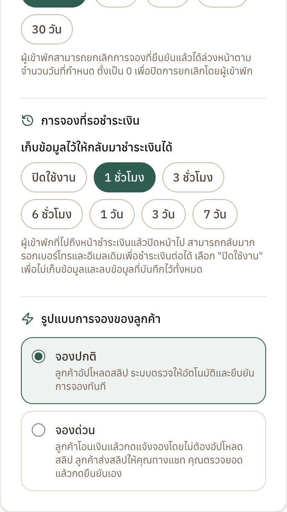
Facebook, Instagram, TikTok และ LINE ID แสดงที่ส่วนท้ายของหน้าเว็บ ช่อง Facebook ยังเป็นช่องทางที่แขกใช้ส่งสลิปในแบบจองด่วนด้วย
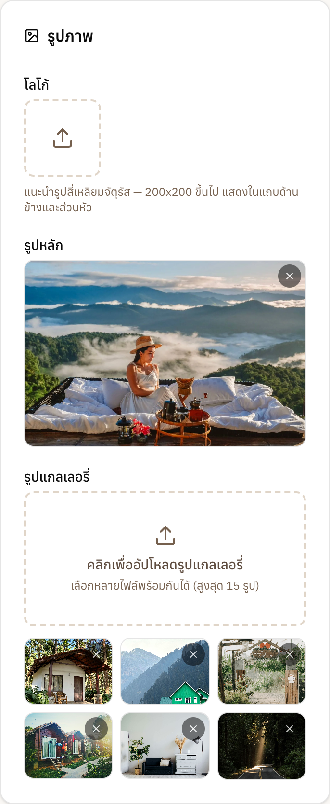
เมนู บ้านพัก · หัวข้อหน้า “จัดการบ้านพัก”
“บ้านพัก” คือหน่วยที่แขกจองได้ แต่ละหลังมีราคา จำนวนคน รูป และราคาพิเศษของตัวเอง ถ้ายังไม่ได้สร้างโฮมสเตย์ (บทที่ 5) หน้านี้จะขึ้น “กรุณาสร้างโฮมสเตย์ก่อนเพิ่มบ้านพัก”
แต่ละการ์ดแสดงรูปแรก ชื่อ ราคาต่อคืน จำนวนผู้เข้าพัก จำนวนหลัง และจำนวนรูป
| ปุ่ม | ผล |
|---|---|
| สวิตช์ เปิดรับจอง | เปิด = แขกจองได้ · ปิด = บ้านพักหายจากหน้าเว็บทันที (ข้อมูลยังอยู่ครบ) บ้านพักที่ปิดอยู่จะมีป้าย “ปิดใช้งาน” และรูปจางลง |
| แก้ไข | เปิดหน้าต่าง “แก้ไขบ้านพัก” |
| ถังขยะ (สีแดง) | ลบบ้านพักถาวร (ดูเงื่อนไขด้านล่าง) |
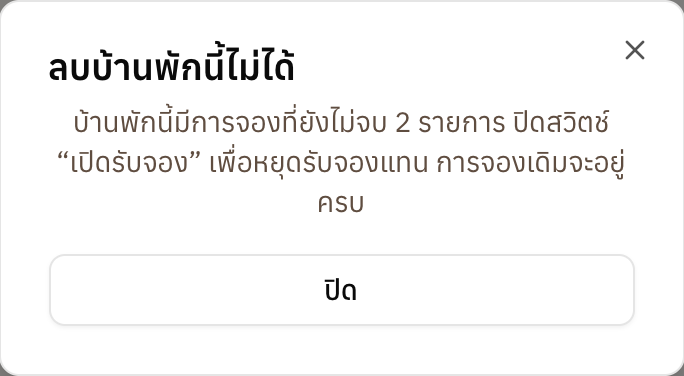
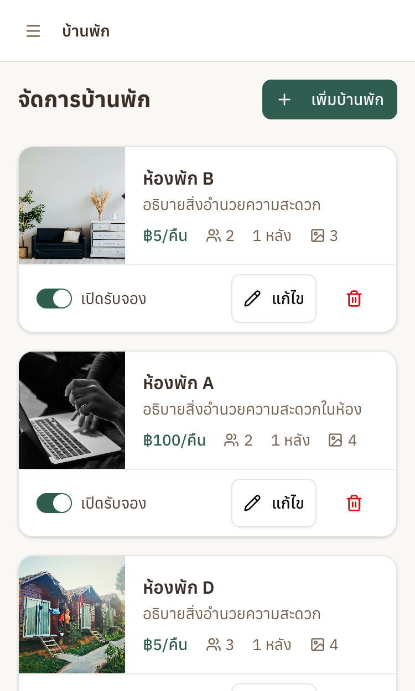
กด + เพิ่มบ้านพัก (มุมขวาบน) หรือไอคอนดินสอบนการ์ด หน้าต่างนี้ยาว เลื่อนลงเพื่อดูทุกหัวข้อ
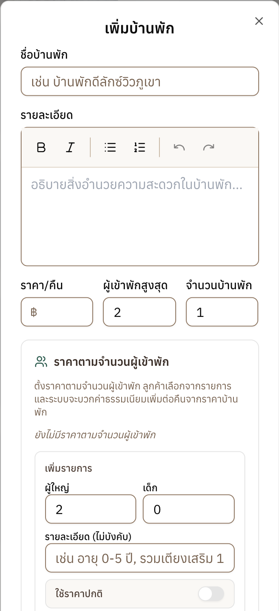
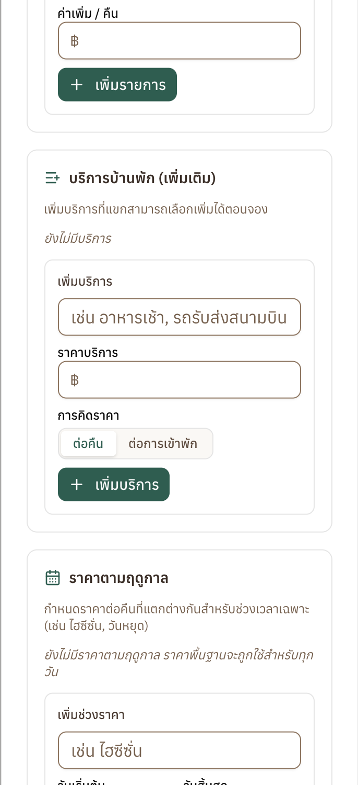
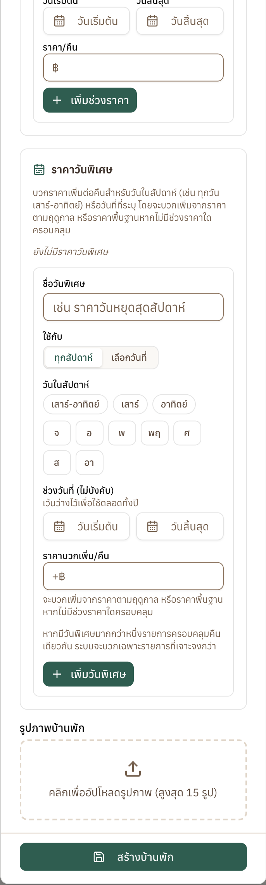
| ช่อง | รายละเอียด |
|---|---|
| ชื่อบ้านพัก * | เช่น “บ้านพักดีลักซ์วิวภูเขา” |
| รายละเอียด | ห้องนอน เตียง ห้องน้ำ วิว จัดรูปแบบได้ |
| ราคา/คืน * | จำนวนเต็ม (บาท) มากกว่า 0 ถ้าเว้นว่างจะขึ้น “กรุณากรอกราคาต่อคืนมากกว่า 0 บาท” |
| ผู้เข้าพักสูงสุด | ค่าเริ่มต้น 2 คน |
| จำนวนบ้านพัก | จำนวนหลังที่เหมือนกันทุกอย่าง และขายพร้อมกันได้ เช่น เต็นท์แบบเดียวกัน 5 หลัง ใส่ 5 แทนการสร้าง 5 รายการ (ค่าเริ่มต้น 1) |
หน้าเว็บแสดง “รองรับสูงสุด N ท่าน” ให้แขก โดยระบบคำนวณเอง: ผู้เข้าพักสูงสุด × จำนวนบ้านพัก ของทุกหลังที่เปิดรับจอง รวมกัน
ใช้เมื่อราคาเปลี่ยนตามจำนวนคน แต่ละรายการมี ผู้ใหญ่ (อย่างน้อย 1) เด็ก รายละเอียด (ไม่บังคับ) และ “ค่าเพิ่ม/คืน” หรือเปิด ใช้ราคาปกติ
สิ่งที่แขกเลือกเพิ่มตอนจอง เช่น อาหารเช้า รถรับส่ง ที่นอนเสริม กรอกชื่อและราคา แล้วเลือกการคิดราคา ต่อคืน หรือ ต่อการเข้าพัก จากนั้นกด + เพิ่มบริการ
ราคาต่อคืนที่แทนที่ราคาปกติในช่วงวันที่กำหนด เช่น ไฮซีซัน หรือช่วงปีใหม่ ใส่ชื่อ วันเริ่มต้น วันสิ้นสุด (นับรวมวันสุดท้าย) และราคา/คืน แล้วกด + เพิ่มช่วงราคา ช่วงวันที่ห้ามทับกัน ถ้าทับจะขึ้น “ช่วงวันที่นี้ซ้อนทับกับช่วงราคาที่มีอยู่”
ราคาที่บวกเพิ่มจากราคาปกติหรือราคาฤดูกาล เช่น บวก 300 บาททุกคืนวันเสาร์
สูงสุด 15 รูป รูปแรกคือรูปปก ที่แขกเห็นบนการ์ดบ้านพัก ตอนนี้ยังเรียงลำดับรูปใหม่ไม่ได้ จึงควรอัปโหลดรูปที่สวยที่สุดเป็นรูปแรก
| สถานการณ์ | ที่บันทึกเมื่อไร |
|---|---|
| สร้างบ้านพักใหม่ | ทุกอย่างบันทึกพร้อมกันเมื่อกด สร้างบ้านพัก |
| แก้ไขบ้านพักที่มีอยู่ | ราคาตามจำนวนผู้เข้าพัก บริการเสริม ราคาฤดูกาล ราคาวันพิเศษ และการลบรูป บันทึกทันทีที่กดเพิ่มหรือลบ ชื่อ รายละเอียด ราคา จำนวนคน และรูปใหม่ ต้องกด บันทึกบ้านพัก |
เมนู การจอง · หัวข้อหน้า “การจองทั้งหมด”
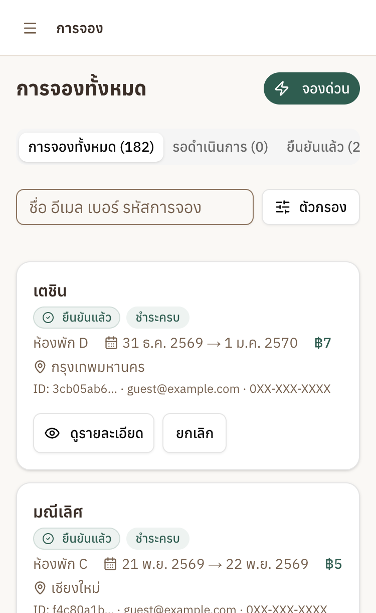
| สถานะ | ความหมาย | คุณต้องทำ |
|---|---|---|
| รอตรวจสอบ | ระบบตรวจสลิปอัตโนมัติไม่ผ่าน หรือเป็นการจองแบบจองด่วนของแขก | ตรวจเงินเข้า แล้วยืนยันหรือยกเลิก (7.4) |
| ยืนยันแล้ว | จองสำเร็จ วันนั้นถูกกันไว้ให้แขก | เตรียมรับแขก |
| เสร็จสิ้น | แขกเช็คเอาท์แล้ว | — |
| ยกเลิก | ยกเลิกโดยผู้เข้าพัก หรือโดยเจ้าของที่พัก วันว่างกลับมาให้จองได้ | — |
| ปฏิเสธ | การจองถูกปฏิเสธ | — |
| ป้ายบนการ์ด | ความหมาย |
|---|---|
| ตรวจสอบการชำระเงินแล้ว | ระบบตรวจสลิปผ่านแล้ว (ดูได้ในหน้ารายละเอียด) |
| จองด่วน · รอตรวจสลิปในแชท | แขกจองแบบจองด่วน สลิปอยู่ในแชท (ดู 5.9) |
| มัดจำ / ชำระครบ | แขกจ่ายมัดจำ (ยังมียอดค้าง ดูบรรทัด “ค้าง: ฿…”) หรือจ่ายครบแล้ว |
| กลุ่ม | แขกจองหลายหลังในครั้งเดียว ยืนยันหรือยกเลิก จะมีผลกับทุกหลังในกลุ่ม |
| Walk-in, Agoda … (ไอคอนสายฟ้า) | การจองที่คุณหรือทีมงานบันทึกเองผ่านปุ่มจองด่วน |
| เช็คอินแล้ว / เช็คเอาท์แล้ว | สถานะการเข้าพัก |
| 📎 ตัวเลข | จำนวนภาพแชทที่แนบไว้ |
ปุ่ม ยืนยัน จะขึ้นเฉพาะการจองที่ระบบตรวจสลิปไม่ผ่าน หรือการจองแบบจองด่วนของแขก
การจองที่รอตรวจสอบจะไม่หมดอายุเอง จะค้างอยู่จนกว่าคุณจะยืนยันหรือยกเลิก
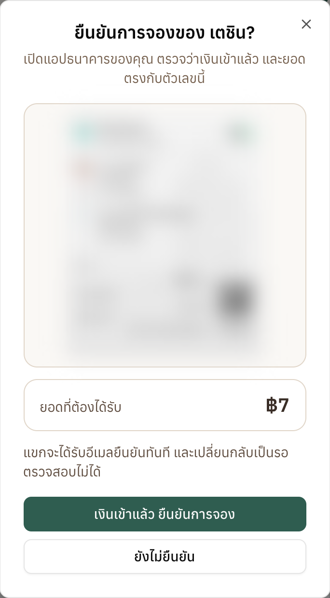
กด ดูรายละเอียด บนการ์ด จะเห็น:
ปุ่มด้านล่างของหน้าต่าง: การจองที่รอตรวจสอบมี ยกเลิก และ ยืนยัน · หลังวันเช็คเอาท์มี เสร็จสิ้นการเข้าพัก ส่วนการยกเลิกการจองที่ยืนยันแล้ว ให้ใช้ปุ่มยกเลิกบนการ์ด
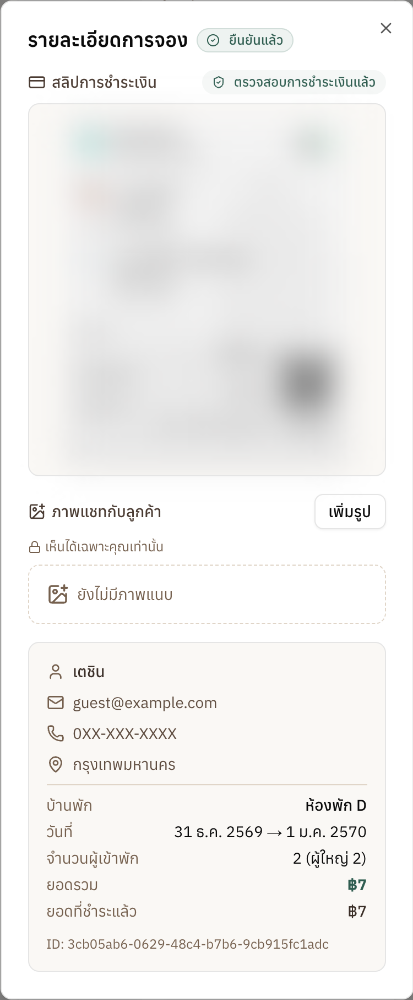
กด ยกเลิก ระบบจะถาม “ยกเลิกการจอง?” ใส่ เหตุผลในการยกเลิก ได้ (ไม่บังคับ) ข้อความนี้จะส่งไปในอีเมลถึงแขก แล้วกด ใช่ ยกเลิกการจอง หรือ เก็บการจองไว้ ถ้าเปลี่ยนใจ
ปุ่มนี้ขึ้นบนการจองที่ยืนยันแล้วตั้งแต่ประมาณ 07:00 น. ของวันเช็คเอาท์ ใช้เมื่อแขกไม่ได้เช็คเอาท์ด้วย QR เอง กดแล้วสถานะเป็น เสร็จสิ้น ไม่มีอีเมลถึงแขก
เมื่อแขกขอเปลี่ยนวัน การ์ดจะมีกรอบ “คำขอเปลี่ยนวันเข้าพัก” แสดงวันเดิม → วันใหม่ บ้านพักเดิม → ใหม่ และ “ส่วนต่างราคา” (สีแดงถ้าแขกต้องจ่ายเพิ่ม พร้อมสถานะสลิป)
ใช้เมื่อแขกจองผ่าน Walk-in, โทรศัพท์, Booking.com, Agoda ฯลฯ เพื่อให้วันนั้นไม่ว่างบนหน้าเว็บ กดปุ่ม ⚡ จองด่วน ในหน้าภาพรวม การจอง หรือปฏิทิน
| ช่อง | หมายเหตุ |
|---|---|
| ชื่อผู้เข้าพัก * | |
| เบอร์โทร * | 10 หลัก |
| อีเมล | ไม่บังคับ |
| แพลตฟอร์ม | ช่องทางที่แขกจองมา |
| วันเช็คอิน / วันเช็คเอาท์ * | ตั้งแต่วันนี้ ถึง 24 เดือนข้างหน้า |
| บ้านพัก * | |
| จำนวนผู้เข้าพัก | ค่าเริ่มต้น 2 |
| ราคาที่ตกลง / ราคาที่จ่าย | ราคาที่จ่ายต้องไม่เกินราคาที่ตกลง ระบบแสดง “ค้าง ฿…” หรือ “ชำระครบ” ให้ทันที |
| หมายเหตุ | ไม่บังคับ |
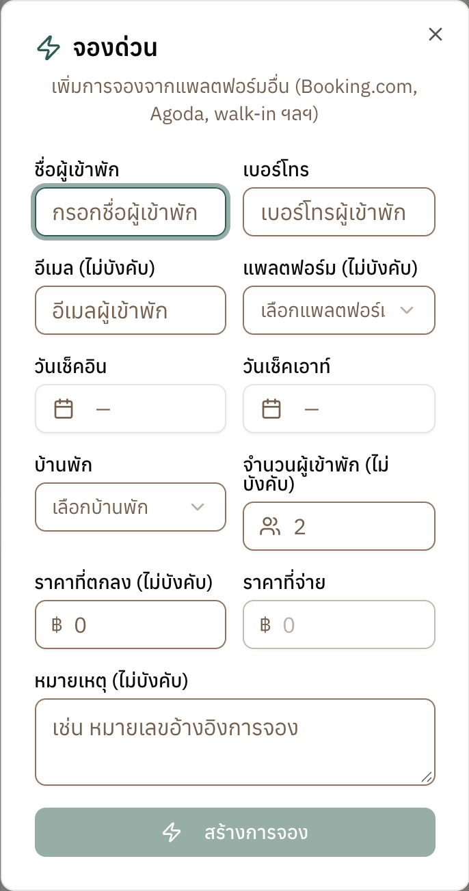
เมนู ปฏิทิน · หัวข้อหน้า “ปฏิทินบ้านพักว่าง”
ใต้ปฏิทินมีรายได้ของเดือน การจองแยกตามบ้านพัก และตัวเลข ว่าง / มีการจอง / บล็อก / รอดำเนินการ (ช่องรอดำเนินการนับการจองที่รอทั้งหมด ไม่ใช่เฉพาะเดือนนี้)
กดวันที่มีการจองหรือถูกบล็อก จะเปิดหน้าต่างของวันนั้น เห็นการจองแต่ละรายการ (ชื่อ สถานะ วันที่ บ้านพัก จำนวนคน ยอดเงินและมัดจำ) กด รายละเอียดการจอง → เพื่อดูสลิปและภาพแชท
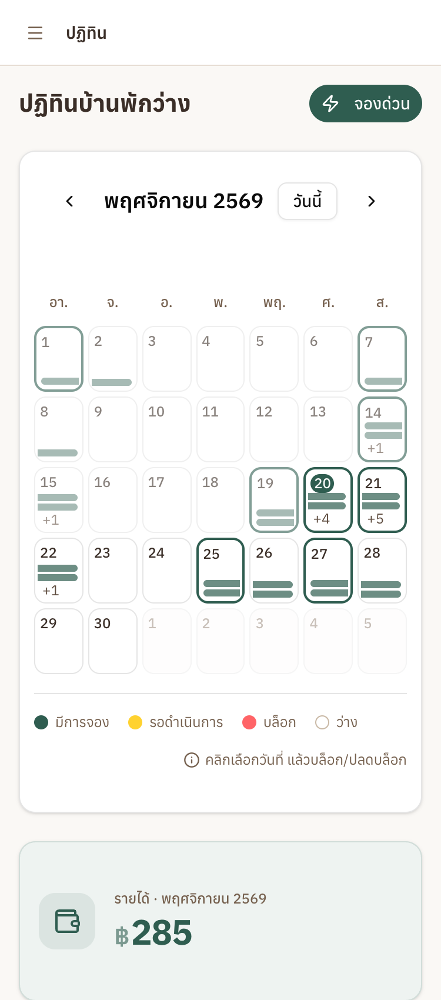
ใช้เมื่อซ่อมบำรุง ใช้เอง หรือขายผ่านช่องทางอื่นที่ไม่ได้บันทึก
ปลดบล็อก: เลือกวันที่ถูกบล็อกแล้วกด ปลดบล็อกวันที่ หรือเปิดหน้าต่างของวันนั้นแล้วกดปลดบล็อก
เมนู เช็คอินวันนี้ · ใต้หัวข้อแสดงวันที่ของวันนี้ (ตามวันที่ของเครื่องที่เปิดอยู่)
การ์ดของแขกที่เช็คอินวันนี้ เรียงตามชื่อ จองหลายหลังจะแยกการ์ดละหลัง แถบด้านบนการ์ดเป็นสีเหลืองเมื่อยังไม่เช็คอิน และเป็นสีเขียวเมื่อเช็คอินแล้ว
แต่ละการ์ดมี บ้านพัก จำนวนผู้เข้าพัก วันที่ ยอดรวม และ “ค้างชำระ ฿…” หรือ “ชำระเต็มจำนวน” บริการเพิ่มเติม เบอร์โทร (แตะเพื่อโทร) อีเมล จังหวัด และหมายเหตุ
รายชื่อแขกที่ออกวันนี้ พร้อมบ้านพักและเบอร์โทร กดชื่อเพื่อเปิดรายละเอียด หน้านี้ไม่มีปุ่มเช็คเอาท์: แขกเช็คเอาท์ด้วย QR เอง หรือคุณกด เสร็จสิ้นการเข้าพัก ที่หน้าการจอง (7.6)
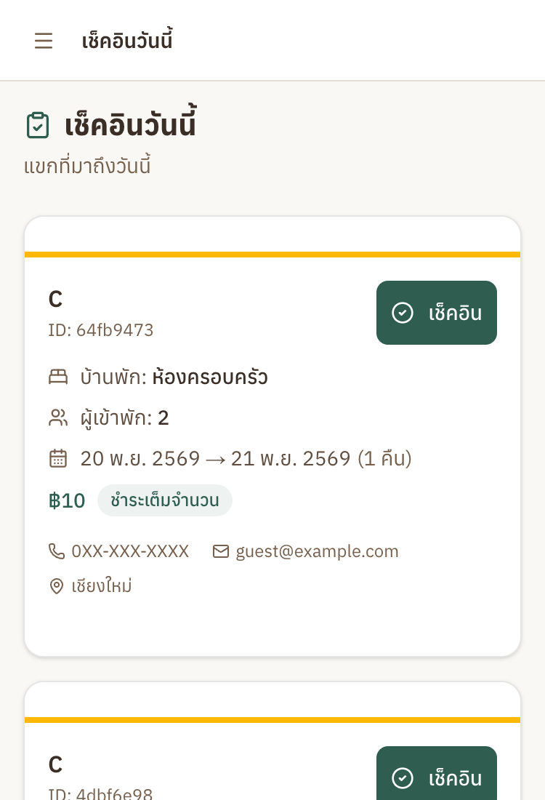
เมนู ส่วนลด/ผู้แนะนำ
สร้างโค้ดให้แขกกรอกตอนจองเพื่อรับส่วนลด และ/หรือผูกโค้ดกับ “ผู้แนะนำ” (เช่น ไกด์ เพจรีวิว เพื่อน) เพื่อคำนวณค่าแนะนำที่คุณต้องจ่ายให้เขา
ปุ่มด้านบน เปิดใช้งานส่วนลด/ผู้แนะนำ ถ้าปิด ระบบจะถาม “ปิดโค้ดส่วนลดทั้งหมด?” และแขกที่กรอกโค้ดจะเห็น “ที่พักนี้ไม่รองรับโค้ดส่วนลด/รหัสแนะนำ”
กราฟ “แนวโน้มคอมมิชชั่นผู้แนะนำ” แสดงค่าแนะนำรายเดือนของแต่ละคนย้อนหลัง 6 เดือน (ไม่รวมการจองที่ยกเลิก)
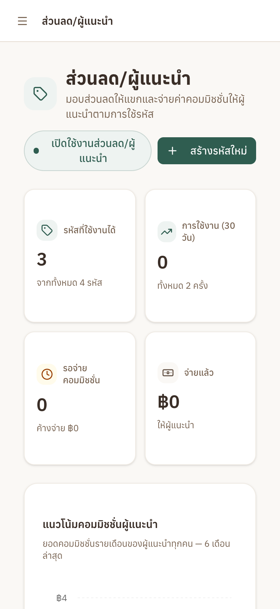
กด + สร้างรหัสใหม่
| ช่อง | รายละเอียด |
|---|---|
| รหัส | พิมพ์เอง (เช่น SUMMER25) หรือกด ↻ ให้ระบบสร้าง ต้องไม่ซ้ำ และแก้ไม่ได้หลังสร้าง |
| ประเภทส่วนลด | เปอร์เซ็นต์ (0–100) หรือจำนวนบาท ใส่ 0 ได้ถ้าใช้โค้ดเพื่อนับค่าแนะนำอย่างเดียว ส่วนลดบาทไม่เกินยอดจอง |
| วันที่เริ่ม / วันที่หมดอายุ | ไม่บังคับ เว้นว่างทั้งคู่ = ใช้ได้ตลอดไป |
| จำกัดจำนวนครั้ง | เว้นว่าง = ไม่จำกัด |
| ใช้ได้ครั้งเดียวต่อแขก | เปิดไว้เป็นค่าเริ่มต้น ระบบเช็กจากเบอร์โทรหรืออีเมลของแขก |
| ผู้แนะนำ | เปิดสวิตช์เพื่อผูกโค้ดกับคน: ชื่อ (ต้องกรอก) เบอร์ PromptPay หมายเหตุ และค่าแนะนำเป็น % หรือบาท ค่าแนะนำคิดจากยอดก่อนหักส่วนลด |
แขกกรอกในช่อง “โค้ดส่วนลด/รหัสแนะนำ” ตอนชำระเงิน หรือเปิดจากลิงก์ที่คัดลอกจากแท็บรหัส ระบบจะใส่โค้ดให้เอง
ลบไม่ได้ถ้ายังมีค่าแนะนำค้างจ่าย ให้บันทึกว่าจ่ายแล้วก่อน หรือปิดการใช้งานโค้ดแทน การลบจะลบประวัติการใช้งานของโค้ดนั้นด้วย
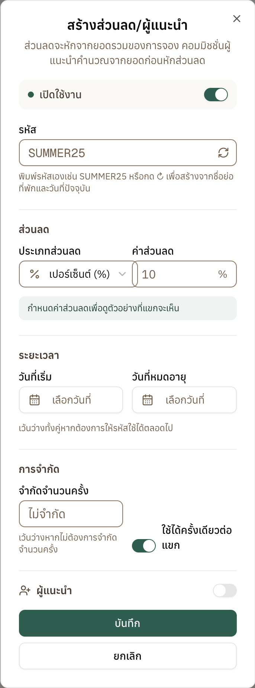
เมนู การเรียกเก็บเงิน
Peaksnature มี 3 แพลน ราคาและอัตราที่แสดงในหน้านี้ตั้งโดย Peaksnature และอาจเปลี่ยนได้ ให้ดูตัวเลขล่าสุดในหน้านี้เสมอ (ตัวเลขในภาพเป็นค่าทดสอบ)
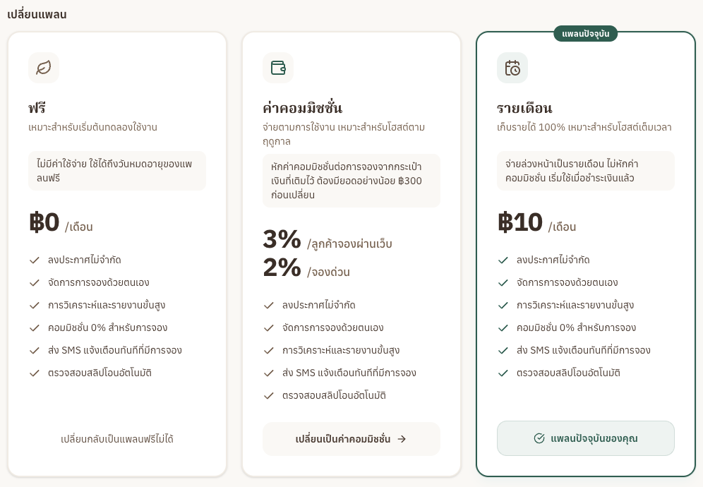
| แพลน | จ่ายอย่างไร | เหมาะกับ |
|---|---|---|
| ฟรี | ไม่มีค่าใช้จ่าย ใช้ได้ 1 เดือนนับจากวันที่บัญชีได้รับอนุมัติ เลือกกลับมาใช้อีกไม่ได้ | ทดลองใช้งาน |
| ค่าคอมมิชชั่น | หักเป็นเปอร์เซ็นต์ต่อการจองจากกระเป๋าเงินที่เติมไว้ มี 2 อัตรา: ลูกค้าจองผ่านเว็บ และจองด่วน (ที่คุณบันทึกเอง) | ที่พักตามฤดูกาล จองไม่สม่ำเสมอ |
| รายเดือน | จ่ายล่วงหน้าเป็นรายเดือน ไม่หักค่าคอมมิชชั่น เริ่มใช้เมื่อชำระเงินแล้ว จ่ายล่วงหน้าหลายเดือนได้ส่วนลด | ที่พักที่มีการจองทั้งปี |
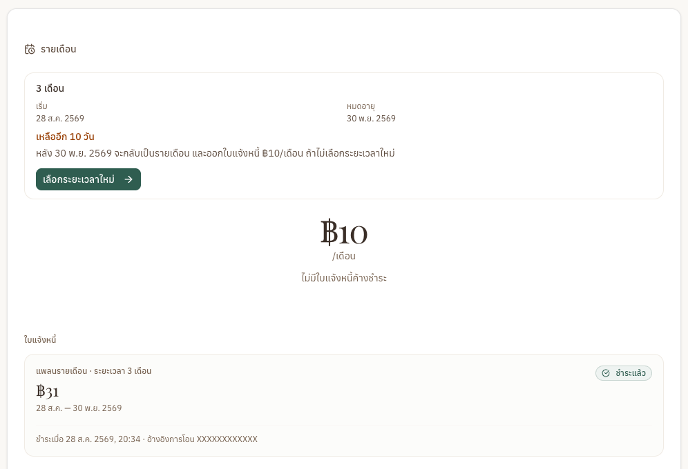
เป็นค่าคอมมิชชั่น: กด เปลี่ยนเป็นค่าคอมมิชชั่น → ยืนยันการเปลี่ยน มีผลทันที ถ้าเงินในกระเป๋าไม่ถึง ฿300 จะขึ้น “ต้องเติมเงินก่อน” พร้อมปุ่ม ไปที่กระเป๋าเงิน
เป็นรายเดือน:
ออกจากแพลนรายเดือนก่อนครบกำหนด: ระบบจะถาม “ออกจากแพลนที่ชำระล่วงหน้า?” วันที่เหลือจะหายทั้งหมดและไม่มีการคืนเงิน
ถ้ามีใบแจ้งหนี้ค้าง ต้องชำระก่อนจึงจะเปลี่ยนแพลนได้
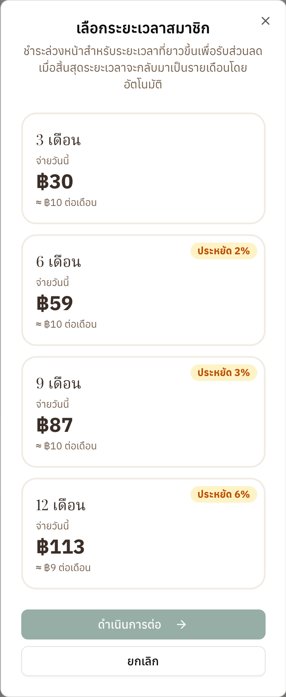
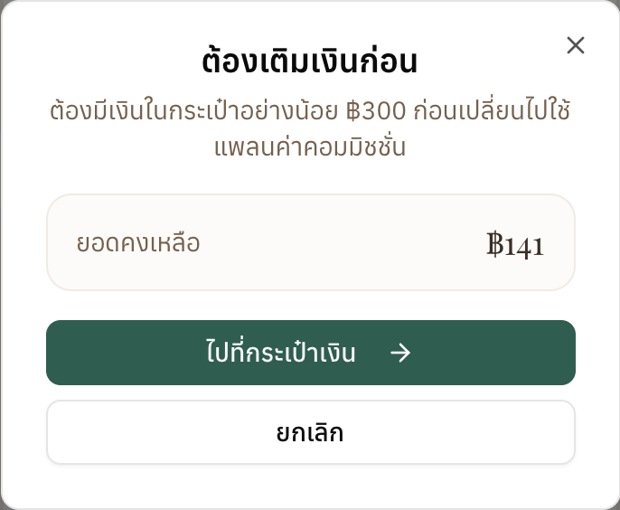
เมนู กระเป๋าเงิน/ใบแจ้งหนี้
“ยอดคงเหลือปัจจุบัน” พร้อมบรรทัดสถานะ เช่น ยอดพอสำหรับแพลนค่าคอมมิชชั่น · ยอดต่ำกว่า ฿300 แล้ว เติมอย่างน้อย ฿… · ยอดติดลบ และ “ถ้ายอดยังติดลบเกินวงเงิน อาจปิดรับจองใหม่ตั้งแต่ {วันที่}” เมื่อเลยวันนั้นแล้ว บรรทัดนี้จะบอกว่าแขกจองใหม่ไม่ได้จนกว่าจะเติมเงิน
บนคอมพิวเตอร์ กด “หรืออัปโหลดจากโทรศัพท์” แล้วสแกน QR ด้วยมือถือเพื่ออัปโหลดสลิปจากมือถือ หน้าจอคอมพิวเตอร์จะอัปเดตเอง
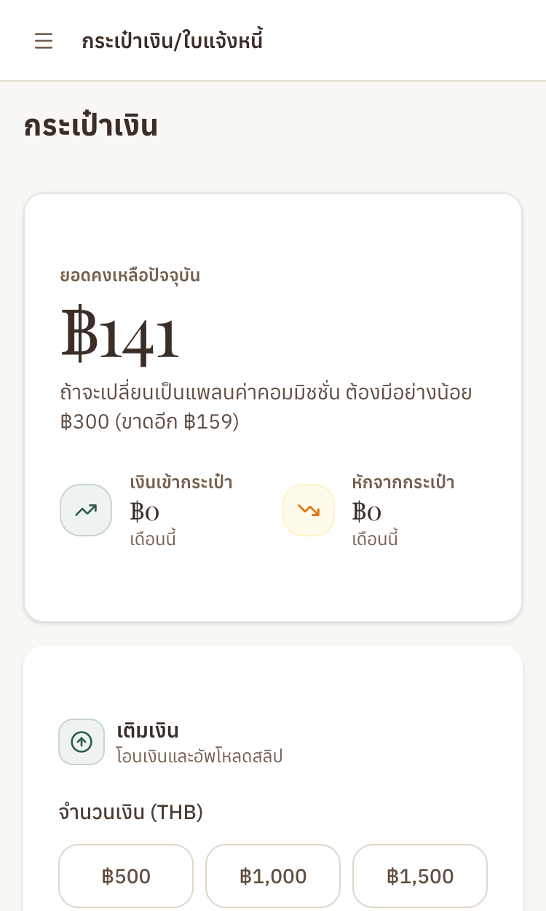
| ข้อความ | ควรทำอย่างไร |
|---|---|
| เชื่อมต่อไม่สำเร็จ สลิปยังอยู่ | กดตรวจสอบอีกครั้งได้เลย |
| สลิปนี้เก่าเกินไป | สลิปเกิน 1 ชั่วโมง ติดต่อทีมงาน Peaksnature พร้อมสลิป |
| บัญชีผู้รับในสลิปไม่ใช่บัญชีของ Peaksnature / ยอดในสลิปไม่ตรงกับยอดที่ต้องชำระ | ถ้าโอนเงินไปแล้ว อย่าโอนซ้ำ และอย่าส่งสลิปเดิมซ้ำ (ระบบจะตอบว่าสลิปถูกใช้แล้ว) ติดต่อทีมงาน Peaksnature พร้อมสลิป ทีมงานเห็นรายการนี้ในระบบและจะจัดการให้ |
| สลิปนี้ถูกใช้ไปแล้ว |
ติดต่อทีมงานได้ที่แบบฟอร์ม “ติดต่อเรา” ท้ายหน้า peaksnature.com
เมนู รายรับ-รายจ่าย
ดูกำไรแต่ละเดือนแบบง่าย: กำไรสุทธิ = รายรับจากการจอง − ค่าแพลตฟอร์ม − ค่าใช้จ่ายที่คุณบันทึก เห็นได้เฉพาะเจ้าของ
ค่าใช้จ่ายนับเข้าเดือนที่จ่ายเงิน แตะแถวเพื่อแก้ไข หรือกดถังขยะเพื่อลบ
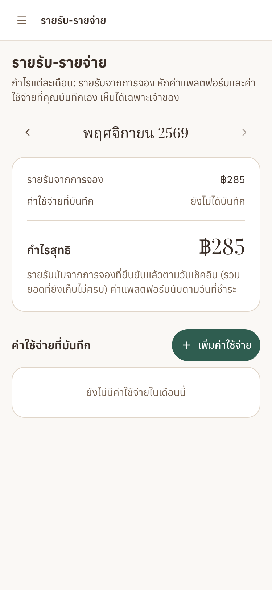
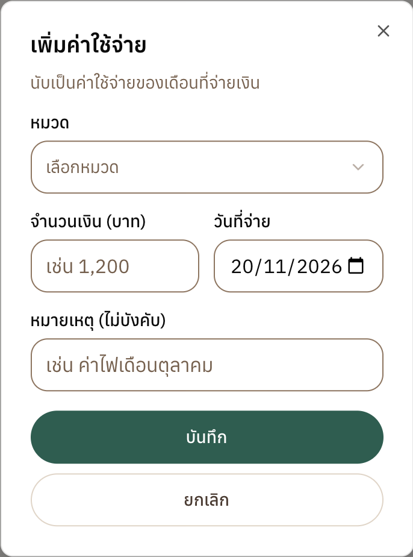
เมนู ผู้ช่วย AI
ผู้ช่วยตอบคำถามแขกและช่วยเลือกวันในหน้าจองของคุณ แขกจะเห็นปุ่ม “ถามผู้ช่วยของที่พัก” บนหน้าจอง ผู้ช่วยตอบจากข้อมูลที่คุณกรอกไว้ในหน้าโฮมสเตย์และบ้านพัก (รายละเอียด กฎ นโยบาย คำถามที่พบบ่อย ราคา) ยิ่งข้อมูลครบ ยิ่งตอบได้ดี
เปิด–ปิดได้ทีละเรื่อง: ตอบคำถามเกี่ยวกับที่พัก, เลือกวันให้บนปฏิทิน, แนะนำบ้านพัก, พาไปหน้าอื่น (เปลี่ยนวัน เช็คอิน หรือช่องทางติดต่อคุณ) ผู้ช่วยไม่จอง ยืนยัน หรือยกเลิกการจอง และไม่รับเงินแทนคุณ
เขียนเรื่องที่อยากให้ผู้ช่วยรู้ เช่น ที่จอดรถ สัตว์เลี้ยง ร้านอาหารใกล้ๆ (ไม่เกิน 2,000 ตัวอักษร) อย่าใส่เรื่องการชำระเงินหรือเลขบัญชี แล้วกด บันทึก
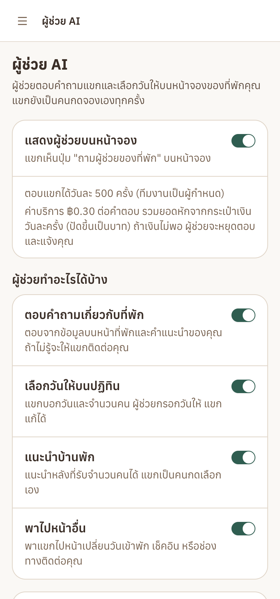
เมนู ทีมงาน
ให้พนักงานเข้าแดชบอร์ดด้วยอีเมลและรหัสผ่านของตัวเอง ไม่ต้องแชร์บัญชีของคุณ เพิ่มได้สูงสุด 10 บัญชี
| ทำได้ | ทำไม่ได้ |
|---|---|
| ดูภาพรวม · การจอง (ยืนยัน ยกเลิก จองด่วน) · ปฏิทิน · เช็คอิน · บ้านพักและราคา · ตั้งค่าการจองและมัดจำ · ส่วนลด/ผู้แนะนำ | การเรียกเก็บเงิน · กระเป๋าเงิน · รายรับ-รายจ่าย · ผู้ช่วย AI · ทีมงาน · โปรไฟล์ · บันทึกจ่ายค่าแนะนำ |
ทีมงานเข้าสู่ระบบที่หน้าเข้าสู่ระบบปกติ (peaksnature.com/login) และต้องกรอกรหัส 6 หลักจากอีเมลทุกครั้ง
กด ⋯ ที่บัญชี: ตั้งรหัสผ่านใหม่ (เมื่อทีมงานลืมรหัส) หรือ ลบบัญชี (ทีมงานเข้าแดชบอร์ดไม่ได้ทันที) เปลี่ยนอีเมลของทีมงานไม่ได้ ต้องลบแล้วเพิ่มใหม่
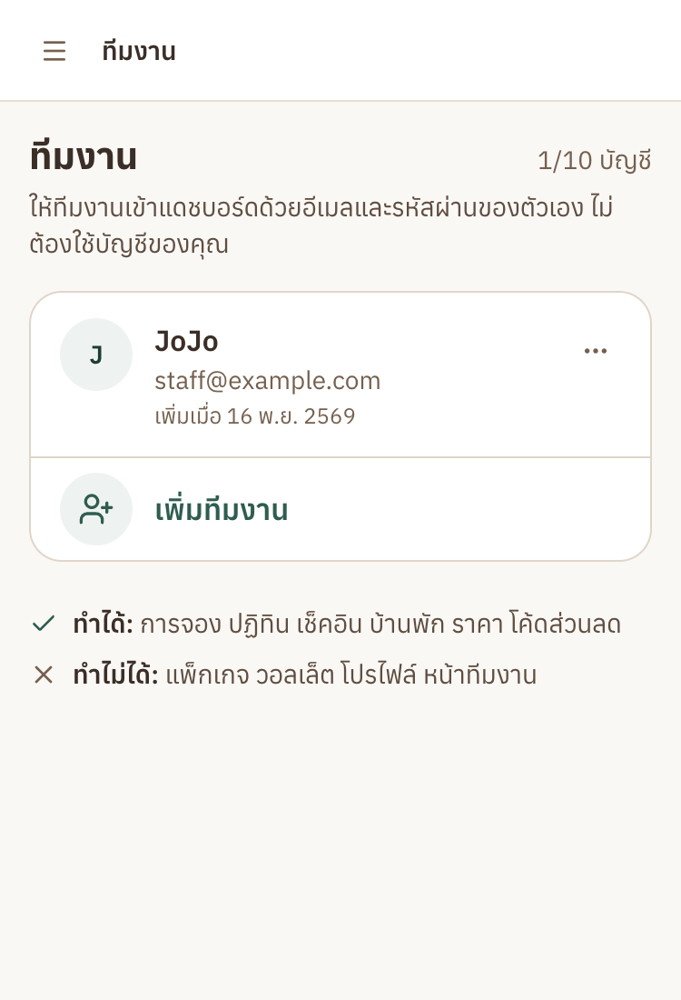
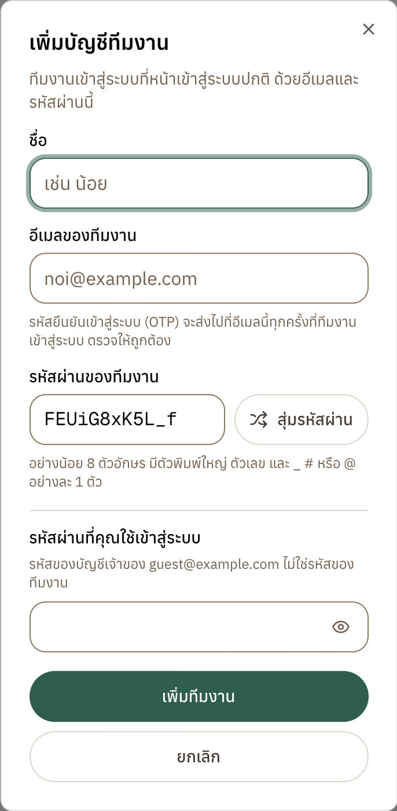
เมนู โปรไฟล์ · หัวข้อหน้า “โปรไฟล์ของฉัน”
ปุ่ม บันทึกการเปลี่ยนแปลง ทุกปุ่มในหน้านี้บันทึกทุกหัวข้อพร้อมกัน
รูปโปรไฟล์ (แสดงบนหน้าจองของคุณ แนะนำรูปสี่เหลี่ยมจัตุรัส) และชื่อ-นามสกุล
อีเมล เบอร์โทรศัพท์ และหมายเลข PromptPay ถูกซ่อนไว้บางส่วน กด ปลดล็อก แล้วใส่ PIN 4–6 หลัก (ที่ตั้งตอนเข้าใช้ครั้งแรก) เพื่อดูหรือแก้ไข
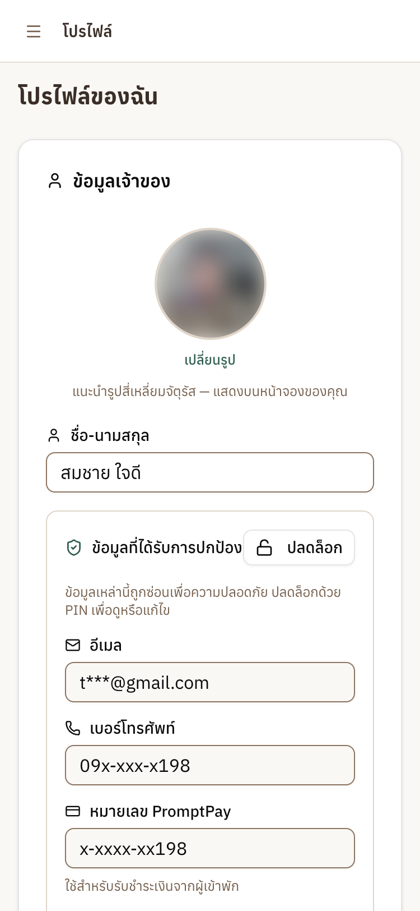
เลือกช่องทางรับแจ้งเตือนการจองใหม่: SMS (ส่งไปเบอร์ที่ลงทะเบียนไว้) หรือ LINE Message ระบบลองส่งช่องทางที่เลือก 3 ครั้ง ถ้าไม่สำเร็จจะส่งทางอีเมลแทน
เปิดใช้งาน = ทุกครั้งที่เข้าสู่ระบบต้องกรอกรหัส 6 หลักจากอีเมล (แนะนำให้เปิด) ต้องปลดล็อกด้วย PIN ก่อนจึงจะเปลี่ยนได้
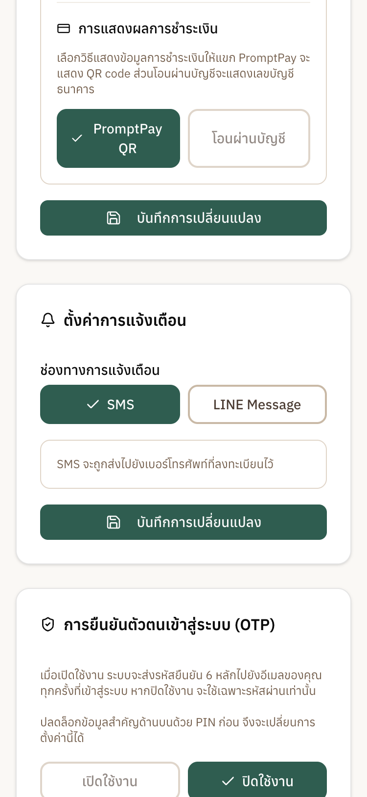
เปลี่ยนรหัสผ่าน: กรอกรหัสผ่านปัจจุบัน รหัสผ่านใหม่ (8 ตัวขึ้นไป) และยืนยัน แล้วกด อัปเดตรหัสผ่าน · เปลี่ยน PIN: กด เปลี่ยนรหัส PIN
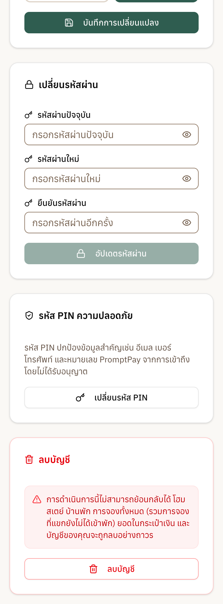
| อาการ | สาเหตุที่เป็นไปได้และวิธีแก้ |
|---|---|
| แขกบอกว่าโอนแล้ว แต่การจองยัง “รอตรวจสอบ” | ระบบตรวจสลิปอัตโนมัติไม่ผ่าน ตรวจเงินเข้าในแอปธนาคาร แล้วกดยืนยันเอง (7.4) |
| แขกจองไม่ได้ ทั้งที่วันว่าง | ตรวจตามลำดับ: (1) แถบเตือนด้านบนของแดชบอร์ด (1.4) (2) กระเป๋าเงินติดลบ ถ้าใช้แพลนค่าคอมมิชชั่น (12.1) (3) ใบแจ้งหนี้ค้าง ถ้าใช้แพลนรายเดือน (4) สวิตช์บ้านพักปิดอยู่ (6.1) (5) วันนั้นถูกบล็อก (8.3) |
| “บัญชีถูกระงับการจองชั่วคราวเพราะมียอดค้างชำระ…” | มียอดค้างกับ Peaksnature เจ้าของไปที่การเรียกเก็บเงินหรือกระเป๋าเงิน แล้วชำระหรือเติมเงิน |
| “หน้านี้โหลดไม่สำเร็จ” | โหลดข้อมูลไม่สำเร็จ (มักเป็นสัญญาณอินเทอร์เน็ต) กด ลองอีกครั้ง |
| แผนที่บนหน้าเว็บว่างเปล่า | ใช้ลิงก์ผิดประเภท ต้องเป็นลิงก์ “ฝังแผนที่” ที่ขึ้นต้นด้วย https://www.google.com/maps/embed (5.2) |
| อัปโหลดรูปแล้วไม่ขึ้นบนหน้าเว็บ | ยังไม่ได้กดบันทึก (5.11) หรือรอประมาณ 30 วินาทีแล้วรีเฟรชหน้าเว็บ |
| บล็อกวันไม่ได้ | มีการจองในคืนนั้น หรือมีแขกกำลังจองอยู่ ถ้าเลือก “ทุกบ้านพัก” ให้เปลี่ยนเป็นบล็อกทีละหลัง (8.3) |
| ลบบ้านพักไม่ได้ | ยังมีการจองที่ยังไม่จบ หรือเคยมีคำขอเปลี่ยนวัน ให้ปิดสวิตช์ เปิดรับจอง แทน (6.1) |
| ลบบัญชีไม่ได้ | ยังมีการจองที่แขกยังไม่ได้เข้าพัก ยกเลิกให้ครบก่อน (16.6) |
| สลิปเติมเงินหรือชำระใบแจ้งหนี้ถูกปฏิเสธ | อ่านข้อความแล้วทำตามตาราง 12.3 ถ้าโอนเงินไปแล้ว อย่าโอนซ้ำ ติดต่อทีมงาน |
| ไม่ได้รับ SMS หรือ LINE เมื่อมีการจอง | ตรวจช่องทางในโปรไฟล์ (16.3) ถ้า LINE ตั้งค่าไม่ถูก ระบบจะส่งอีเมลแทน ตรวจกล่องอีเมลและโฟลเดอร์สแปม |
| ไม่ได้รับรหัส 6 หลักตอนเข้าสู่ระบบ | ตรวจโฟลเดอร์สแปม รอสักครู่แล้วกด “ส่งรหัสอีกครั้ง” รหัสใช้ได้ 5 นาที |
| ทีมงานลืมรหัสผ่าน | เจ้าของกด ⋯ → ตั้งรหัสผ่านใหม่ ในหน้าทีมงาน (15.3) |
| เพิ่งได้อีเมลอนุมัติ แต่ยังเห็นหน้า “รอการอนุมัติ” | รอไม่เกิน 5 นาทีแล้วรีเฟรช (2.1) |